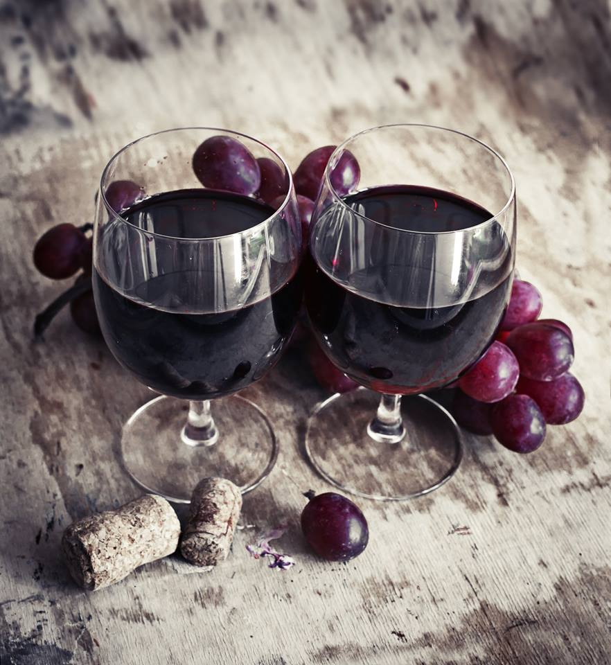
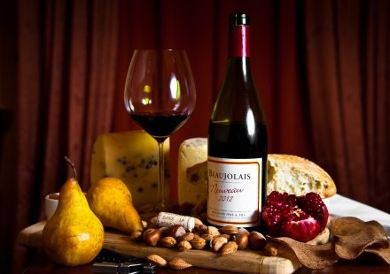
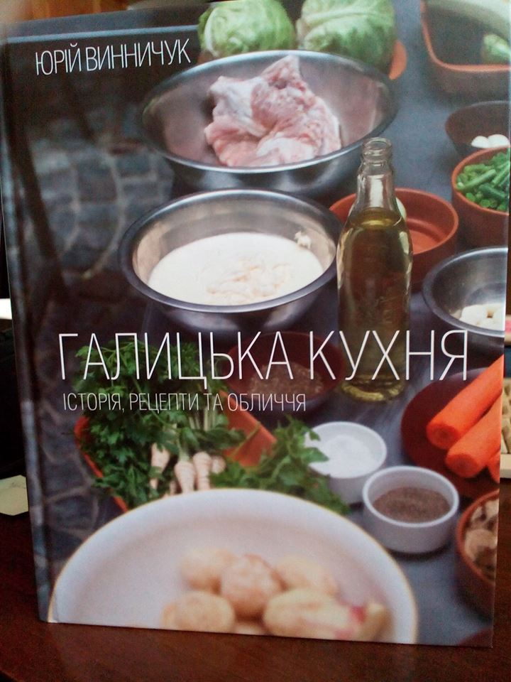

Світ, котрий існує поруч з нами. Дехто їх називає масонами.
«Найдорожча Ресторація Галичини» запрошує всіх закоханих на приємні романтичні несподіванки!
Зроби три прості кроки та отримай до романтичної вечері пляшку сицилійського вина та десерт для закоханих.
- 14 або 15 лютого замовляй у нас пляшку Сицилійського вина
- заповни коротку анкету про себе (деталі в офіціанта)
- будь другом нашої сторінки
18 лютого, за допомогою сайту random.org, методом випадкового жеребкування буде визначено ім’я переможця, який отримає пляшку Сицилійського вина.

Le Beaujolais Nouveau est arrivé!
Хто ще не знає, сьогодні свято молодого вина Beaujolais Nouveau
І у ваас друзі є чудова нагода спробувати йогоу нас.
Bardolino Novello San Crispino Essere 2014 це молоде вино з Італії з легким смаком та фруктовим ароматом
уже чакає на вас! wink emoticon

Галицька кухня
Прийшла з друкарні довгоочікувана Галицька кухня. Пахне гарно! Рецепти на місці В руках чується значимість і багатство Галичини. Презентуємо на форумі разом з Видавництво Старого Лева. Готуємо багато приємного))